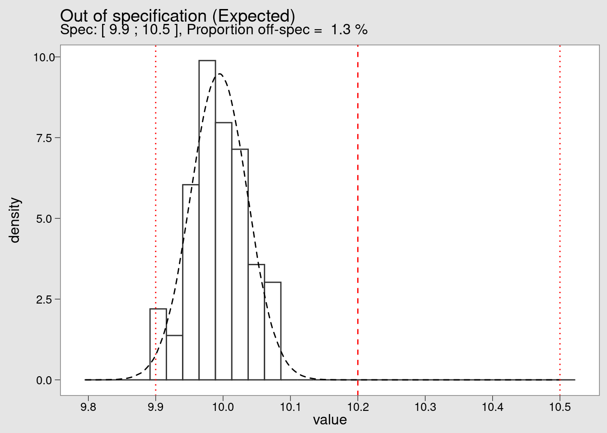

Process Capability
Out of specification
bamako_long <- bamako %>%
pivot_longer(cols = starts_with("Sample"),
names_to = "sample",
values_to = "value")spec_max <- 10.5
spec_min <- 9.9
spec_tgt <- (spec_max - spec_min) / 2 + spec_min
specs <- c(spec_min, spec_tgt, spec_max)variables
bamako_mean = bamako_long %>% pull(value) %>% mean()
bamako_sd = bamako_long %>% pull(value) %>% sd()
spec_max <- 10.5
spec_min <- 9.9
bamako_n <- length(bamako_long)
theor_n = 1000000calculation: probability of being between the limits
within_limits <- function(UCL, LCL, mean, sd) {
(pnorm(UCL, mean, sd) - pnorm(LCL, mean, sd))*100
}bamako_within <- within_limits(spec_max, spec_min, bamako_mean, bamako_sd)
bamako_off_spec <- 100 - bamako_withinbamako_theor <- rnorm(n = theor_n, mean = bamako_mean, sd = bamako_sd) %>%
as_tibble()plot_subtitle <- paste(
"Spec: [", spec_min, ";", spec_max,
"], Proportion off-spec = ",
signif(bamako_off_spec, digits = 2), "%"
)Note that we are deliberately twicking the plot colors to make it look like the plots from minitab and from the qcc package. This gives a starting point for users who would like to adapt and further develop this kind of plots but still keep a visual coherence with the existing ones.
# source("theme_qcc.R")
bamako_long %>%
ggplot(aes(x = value, y = ..density..)) +
geom_histogram(
bins = 30,
fill = "white",
color = "grey20") +
geom_density(data = bamako_theor, linetype = 2) +
geom_vline(xintercept = {spec_min}, color = "red", linetype = 3) +
geom_vline(xintercept = {spec_max}, color = "red", linetype = 3) +
geom_vline(xintercept = {spec_tgt}, color = "red", linetype = 2) +
scale_x_continuous(n.breaks = 10) +
theme(
plot.background = element_rect(color = NA, fill = "grey90"),
panel.background = element_rect(fill = "white", color = NA),
panel.border = element_rect(fill = NA, color = "black")
) +
labs(
title = "Out of specification (Expected)",
subtitle = {plot_subtitle})
By looking at the histogram of the Bamako lightning dataset we confirm the extreme offcentering of the production. We also see that although there are no measurements beyond the lower specification limit (LSL) it is very likely this will happen soon.
We can also calculate the Cpk
capability <- function(UCL, LCL, mean, sd) {
pmin(
(abs(mean - abs(LCL)) / (3 * sd)),
(abs((abs(UCL) - mean)) / (3 * sd))
)
}capability(spec_max, spec_min, bamako_mean, bamako_sd)[1] 0.7456003And convert the percentage out of spec in parts per million. We’re not considering the 1.5 shift that sometimes is presented in the literature but rather making a simple direct conversion of the proportion out of spec found before:
per_mio_off_spec <- function(percent_within) {
formatC(
((100 - percent_within) * 10000),
format = "d",
big.mark = "'"
)
}per_mio_off_spec(bamako_within)[1] "12'649"The expected population below the LSL is 1,3% which is very high for industry standards. In fact this corresponds to 12’649 parts per million (ppm) whereas a common target would be 1 ppm. Naturally these figures are indicative and they depend of the context criteria such as severity of the problem, cost, difficulty to eliminate the problem and so on.
We can now establish a simple table using the functions created before, to present the expected percentage that falls within certain limits. To make it usefull we’re putting this limits at +/- 1 to 6 standard deviations
mean <- 0
sd <- 1
sigma_conversion_table <-
tibble(UCL = c(1,2,3, 4,5,6),
LCL = -UCL,
mean = mean,
sd = sd)sigma_conversion_table <- sigma_conversion_table %>%
mutate(perc_in_spec = within_limits(UCL, LCL, mean, sd),
Cpk = capability(UCL, LCL, mean, sd),
ppm_defects = per_mio_off_spec(perc_in_spec))
sigma_conversion_table %>%
kable(align = "c")| UCL | LCL | mean | sd | perc_in_spec | Cpk | ppm_defects |
|---|---|---|---|---|---|---|
| 1 | -1 | 0 | 1 | 68.26895 | 0.3333333 | 317’310 |
| 2 | -2 | 0 | 1 | 95.44997 | 0.6666667 | 45’500 |
| 3 | -3 | 0 | 1 | 99.73002 | 1.0000000 | 2’699 |
| 4 | -4 | 0 | 1 | 99.99367 | 1.3333333 | 63 |
| 5 | -5 | 0 | 1 | 99.99994 | 1.6666667 | 0 |
| 6 | -6 | 0 | 1 | 100.00000 | 2.0000000 | 0 |
Cpk index
library(qcc)bamako_clean <- bamako %>%
select(-Hour) bamako_cpk <- process.capability(
bamako_xbar,
breaks = 10,
spec.limits = c(spec_min, spec_max),
target = spec_tgt,
digits = 2,
print = FALSE,
std.dev = bamako_sd
)
A fine tuning of the forecast of the number of expected parts out of specification can be done with the parameter std.dev. The input value will be used in the probability distribution function. Different approaches can be considered: calculating the sandard deviation within each subgroup or the standard deviation of the entire population and also correcting the standard deviation dividing by n or by n - 1. In this example we re-use the standard deviation calculated on the entire set of datapoints as the group is small but for a case with more data it would be interesting to used the subgroups that tend to give smaller standard deviations.